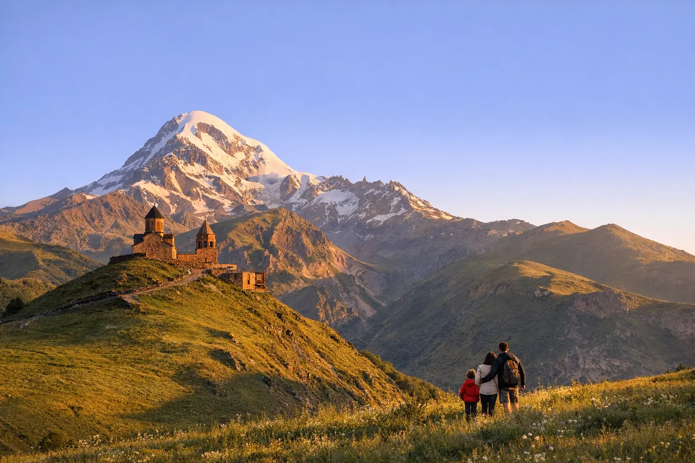
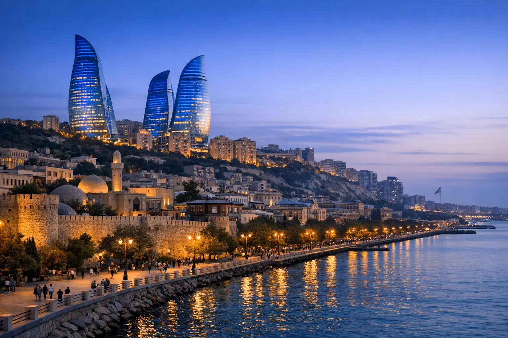
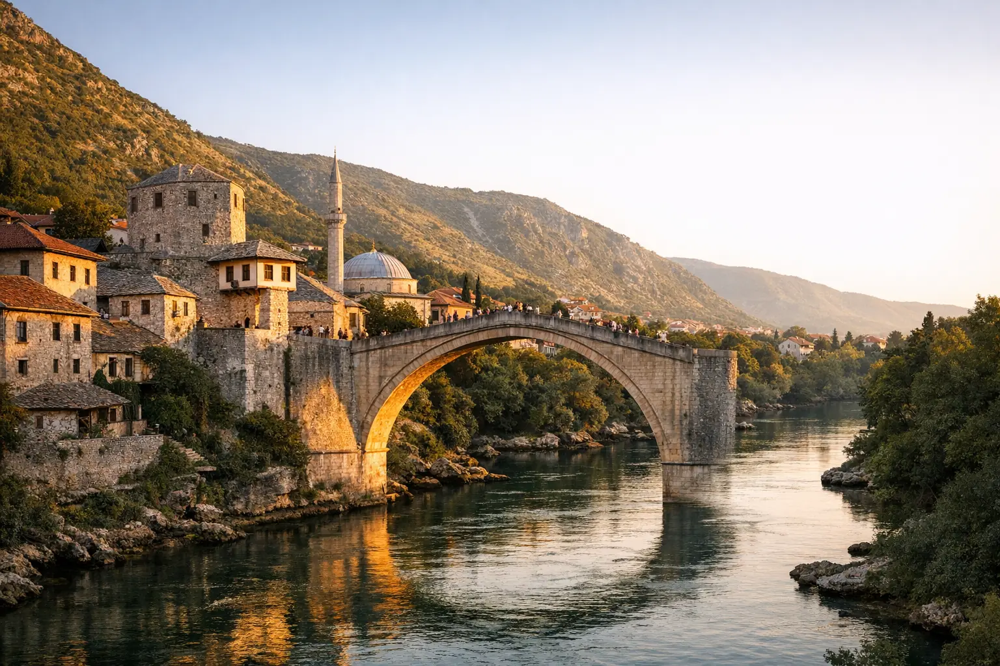

أفضل وجهات شهر العسل في تركيا: مقارنة سريعة للعرسان
دليل العرسان العرب لاختيار وجهة شهر العسل في تركيا حسب الموسم والذوق، مع جدول مقارنة وبرنامج مقترح 9 أيام ولمسات رومانسية تصنع الفرق.

9 أيام • 8 ليالٍ • إندونيسيا
أيام خضراء بين مدرجات الأرز وغابات أوبود، ثم منحدرات نوسا بينيدا وشواطئ نوسا دوا الهادئة.
السياحة في بالي حلم كثير من العرسان والعائلات: جزيرة إندونيسية خضراء تجمع مدرجات الأرز والبراكين والشلالات والشواطئ في مكان واحد. يبدأ برنامج بالي 9 أيام بثلاث ليالٍ في أوبود، قلب الجزيرة الأخضر، ثم خمس ليالٍ على الساحل الجنوبي مع رحلة بحرية إلى جزيرة نوسا بينيدا. وتشتهر بالي بفللها الخاصة ذات المسابح وسط الطبيعة، وبمنتجعاتها الهادئة على المحيط الهندي، وبأسواق الفنون والحرف اليدوية في أوبود.
اخترنا مساراً واحداً متماسكاً داخل بالي بدلاً من التنقل بين الجزر الإندونيسية، لتقضي وقتاً أطول في الاستمتاع ووقتاً أقل على الطرق. تتوفر رحلات من إسطنبول إلى مطار بالي الدولي، وتختلف مدتها حسب خط الرحلة وشركة الطيران. ولمن يحب أجواء بونشاك وباندونغ الجبلية الباردة، يمكن إضافتهما قبل بالي في برنامج أطول. ونرتب الجولات بإيقاع مريح يناسب العرسان والعائلات على حد سواء.
استقبال في مطار بالي الدولي (دنباسار) والتوجه إلى أوبود في نحو ساعة ونصف حسب حركة السير. تسجيل الدخول في فيلا أو فندق بين الأشجار، ثم مساء هادئ للراحة بعد الرحلة الطويلة.
نبدأ بمدرجات الأرز في تيغالالانغ صباحاً حيث الضوء أجمل، ويمكن تجربة الأرجوحة المطلة على الوادي (اختياري). ثم نزور غابة القرود وقصر أوبود وسوق الفنون والحرف اليدوية. المساء حر في مقاهي أوبود ومطاعمها.
في الطريق نزور مزرعة للقهوة والتوابل لتذوق القهوة البالية، ثم نصعد إلى كينتاماني لإطلالة واسعة على جبل باتور وبحيرته البركانية مع غداء مطل على المشهد. في طريق العودة نزور معبد تيرتا إمبول المعروف بينابيع مياهه، ثم نعود إلى أوبود.
نغادر أوبود نحو مرتفعات بيدوغول، ونزور معبد أولون دانو براتان الذي يبدو طافياً على البحيرة، ونتوقف عند بوابة هاندارا الشهيرة. بعد الظهر نتجه إلى معبد تانا لوت لنشاهد غروب الشمس فوق الصخرة البحرية، ثم ننتقل إلى فندقنا في الجنوب.
ننطلق بقارب سريع من سانور إلى جزيرة نوسا بينيدا في رحلة قصيرة تقارب 45 دقيقة. نزور إطلالة شاطئ كيلينكينغ الشهيرة، والشاطئ المكسور بقوسه الصخري، وحوض الملاك الطبيعي. ونعود إلى بالي عصراً.
يوم مرن على شواطئ نوسا دوا الهادئة. ولمحبي المغامرة تتوفر في تانجونغ بينوا القريبة رياضات مائية مثل المظلة البحرية والقارب الموزي والغطس السطحي (اختيارية)، أو جلسة سبا بالية تقليدية للاسترخاء.
صباح حر في المنتجع، وبعد الظهر نزور معبد أولواتو المبني على حافة جرف شاهق فوق المحيط الهندي، ونحضر عرض رقصة الكيتشاك التقليدية مع الغروب. نختم بعشاء مأكولات بحرية على رمال خليج جيمباران.
يوم حر للاسترخاء في المنتجع أو التسوق في سيمينياك وكوتا، حيث المتاجر المحلية والمقاهي المطلة على البحر. ويمكن ترتيب زيارة حديقة غارودا ويسنو كينكانا الثقافية أو رحلة بحرية أخرى عند الطلب.
إفطار أخير في المنتجع ووقت حر حسب موعد رحلتك، ثم النقل إلى مطار بالي الدولي لرحلة العودة إلى إسطنبول.
| المدينة | الليالي | المقترح |
|---|---|---|
| أوبود | 3 | فلل خاصة بمسبح وسط الغابة أو مدرجات الأرز، أو فنادق 4 نجوم قرب وسط أوبود. |
| نوسا دوا / جيمباران | 5 | منتجعات شاطئية هادئة في نوسا دوا تناسب العائلات والعرسان، أو جيمباران لمن يحب الغروب والمأكولات البحرية. |
احجز هذا البرنامج
أضف تاريخ الوصول وعدد المسافرين ومستوى الفنادق، ويصلك عرض مكتوب بالسعر النهائي عبر واتساب.
أسئلة وأجوبة
بالي أنسب لمن يحب البحر والطبيعة الاستوائية والمنتجعات، وبونشاك أنسب لمن يبحث عن جو جبلي بارد وشاليهات عائلية قرب جاكرتا. ويمكن الجمع بينهما في برنامج أطول، ونقترح لك التقسيم حسب أعمار أطفالك واهتماماتكم.
نعم، تفرض حكومة بالي ضريبة سياحية تُدفع مرة واحدة على كل زائر أجنبي، وقيمتها 150 ألف روبية إندونيسية وفق آخر تحديث معلن، وقد تتغير. نوضح لك طريقة دفعها قبل السفر.
بالتأكيد، فهي من أشهر وجهات العرسان: فلل بمسبح خاص في أوبود، وغروب ساحر في تانا لوت وأولواتو، وعشاء على رمال جيمباران. ونخفف وتيرة الجولات لتناسب أجواء شهر العسل.
غالبية سكان بالي من الهندوس، لكن الطعام الحلال متوفر في المناطق السياحية الرئيسية مثل نوسا دوا وكوتا وسيمينياك وأوبود. نرشح لك مطاعم حلال قريبة من فندقك.
من دليل أويا
دليل العرسان العرب لاختيار وجهة شهر العسل في تركيا حسب الموسم والذوق، مع جدول مقارنة وبرنامج مقترح 9 أيام ولمسات رومانسية تصنع الفرق.
تركيا بلد بمناخات متعددة، فما يناسب إسطنبول قد لا يناسب أنطاليا أو أوزنجول في الشهر نفسه. دليل شهر بشهر يساعدك على اختيار التوقيت والوجهة معاً.

بدلاً من أرقام عامة لا تناسب رحلتك، نشرح لك مكونات تكلفة السفر إلى تركيا وما يرفعها ويخفضها، مع طريقة بسيطة لحساب ميزانية أسبوع ونصائح عملية للتوفير.
قد يعجبك أيضاً

أسبوع بين أزقة تبليسي القديمة وقمم القوقاز في كازبيجي وجودوري، ثم هدوء غابات بورجومي ومياهها المعدنية.

باكو بين أسوار مدينتها القديمة وأبراجها الحديثة، ثم طبيعة قبالا الخضراء وتلفريك توفانداغ مروراً بشماخي التاريخية.

سراييفو بروحها العثمانية، وموستار وجسرها الشهير، وطبيعة نهر نيريتفا وبحيرة يابلانيتسا وشلالات كرافيتسا في أسبوع واحد.
خدمة شخصية من البداية للنهاية
نصمم لك برنامجاً خاصاً بعدد الأيام والمدن والفنادق التي تريدها — فقط أخبرنا.